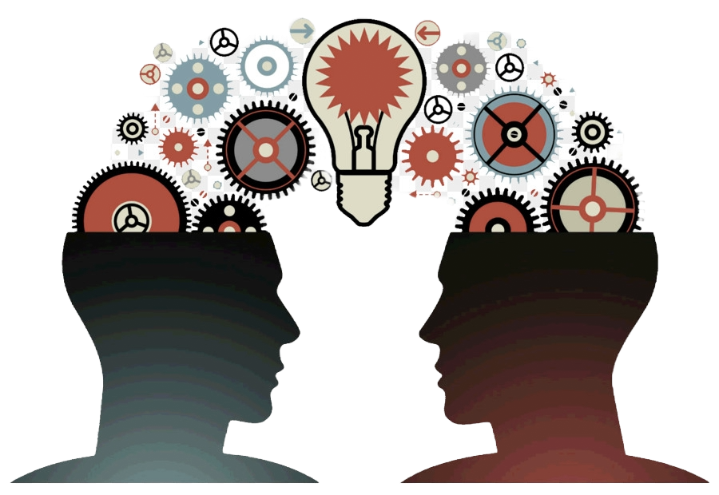

Design: Human Psychology
Marc Urbealis ~ October 2nd, 2024.
Introduction
The intricate dance between human psychology and UI/UX design is a captivating exploration that delves into the core of user-centric design. This essay aims to dissect the profound impact of human psychology on the UI/UX design process. By understanding the intricacies of cognitive processes, emotions, and behavioral patterns, designers can craft experiences that resonate with users on a profound level. Through an analysis of case studies, we will unravel the ways in which psychological principles have shaped successful UI/UX designs.
The Psychology Behind User Interaction
Cognitive Load and Information Processing:
Cognitive psychology forms the backbone of UI/UX design, influencing how users process information. Designers leverage concepts such as chunking, which involves organizing information into manageable groups, to reduce cognitive load. Google's search engine interface is a prime example, with its minimalist design that prioritizes relevant information, minimizing cognitive strain.
Visual Perception and Gestalt Principles:
Visual perception psychology guides designers in creating interfaces that align with how users perceive and interpret visual stimuli. Gestalt principles, such as proximity, similarity, and closure, inform the organization of elements to create cohesive and meaningful designs. Amazon's product pages strategically employ proximity and similarity, grouping related information to enhance user comprehension.
Emotional Design and User Engagement:
Emotions play a pivotal role in user engagement and decision-making. Drawing from emotional design principles, designers aim to evoke specific emotions that align with the brand and user experience goals. Airbnb's use of emotionally resonant visuals and personalized messaging fosters a sense of trust and connection, enhancing the overall user experience.
II. User Behavior and Decision-Making:
Behavioral Economics in UI/UX:
Insights from behavioral economics shed light on the psychological factors influencing user decision-making. Nudging and choice architecture, concepts popularized by Richard Thaler and Cass Sunstein, help designers guide users toward desired actions. LinkedIn's profile completion prompts strategically use nudges to encourage users to provide more information.
Hick's Law and Decision Time:
Hick's Law, stating that the time it takes to make a decision increases with the number of choices, underscores the importance of simplicity in UI/UX design. Apple's iOS settings menu exemplifies this principle by presenting a limited set of options within each category, reducing decision time and enhancing user satisfaction.
III. User Experience and Cognitive Psychology:
User Memory and Information Retrieval:
Cognitive psychology principles related to memory influence how designers structure information for optimal user recall. The spacing effect, for instance, suggests that information is better retained through spaced repetition. Duolingo, a language learning app, implements this principle by introducing and reinforcing vocabulary at intervals for effective learning.
Affordances and Signifiers:
Understanding how users perceive and interact with objects is crucial for creating intuitive interfaces. Donald Norman's concept of affordances and signifiers guides designers in making interface elements visually indicative of their functionality. The use of buttons with shadows or raised edges in digital interfaces, reminiscent of physical buttons, exemplifies this principle.
Case Studies:
Instagram's Endorsement of Emotional Design:
Understanding how users perceive and interact with objects is crucial for creating intuitive interfaces. Donald Norman's concept of affordances and signifiers guides designers in making interface elements visually indicative of their functionality. The use of buttons with shadows or raised edges in digital interfaces, reminiscent of physical buttons, exemplifies this principle.
Amazon's Application of Behavioral Economics:
Understanding how users perceive and interact with objects is crucial for creating intuitive interfaces. Donald Norman's concept of affordances and signifiers guides designers in making interface elements visually indicative of their functionality. The use of buttons with shadows or raised edges in digital interfaces, reminiscent of physical buttons, exemplifies this principle.
Duolingo's Gamification and Cognitive Learning:
Duolingo integrates gamification principles into its language learning app, tapping into the psychological aspects of motivation and reward. The use of badges, progress tracking, and a point system engages users emotionally and cognitively, fostering a positive and effective learning experience.
Conclusion:
In conclusion, the fusion of human psychology and UI/UX design is an intricate dance that shapes digital experiences. By delving into cognitive processes, behavioral patterns, and emotional responses, designers can create interfaces that resonate with users on a profound level. The case studies explored demonstrate the tangible impact of incorporating psychological principles into UI/UX design, leading to successful and user-centric outcomes. As technology continues to evolve, the symbiotic relationship between psychology and design will remain integral, guiding designers toward crafting experiences that are not only visually appealing but also deeply attuned to the intricacies of the human mind.